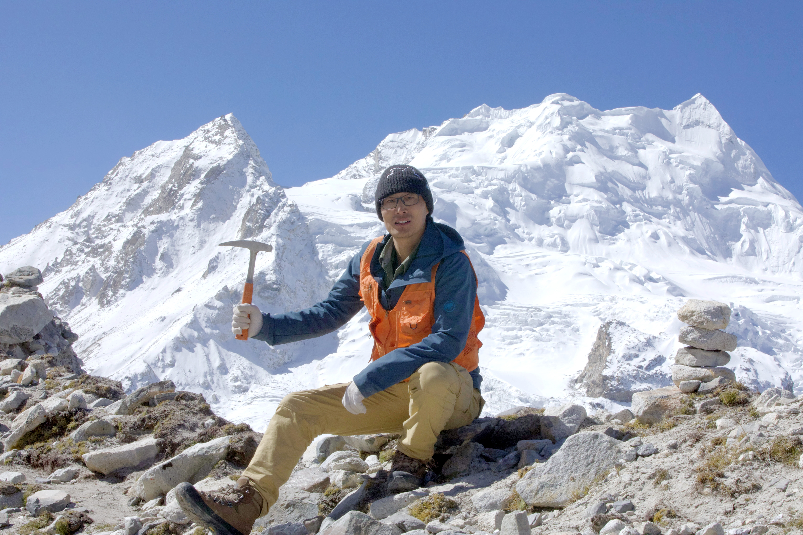
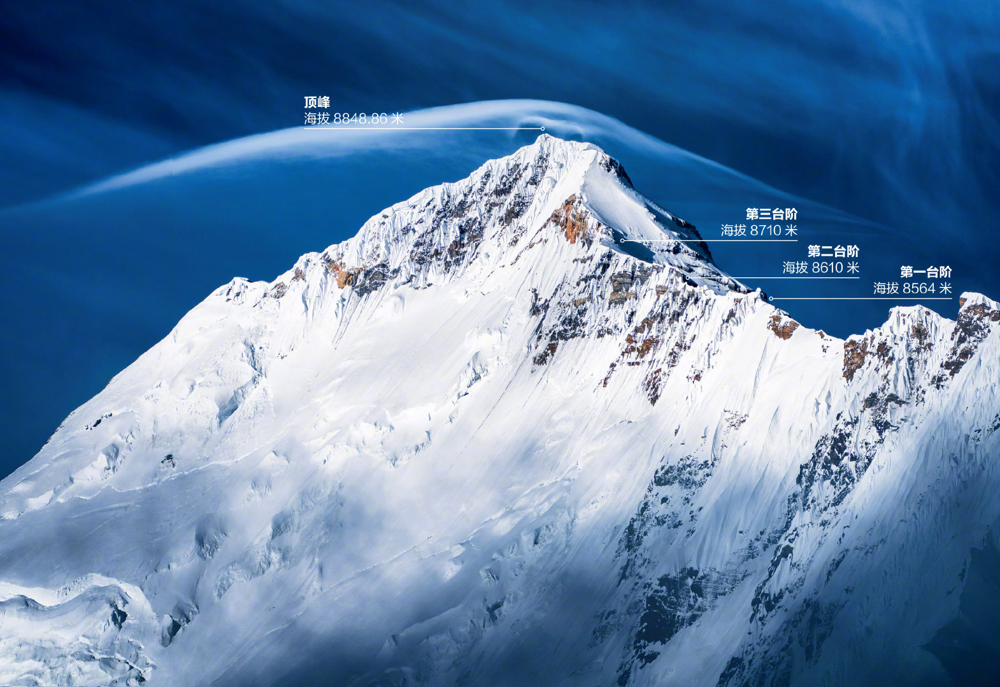
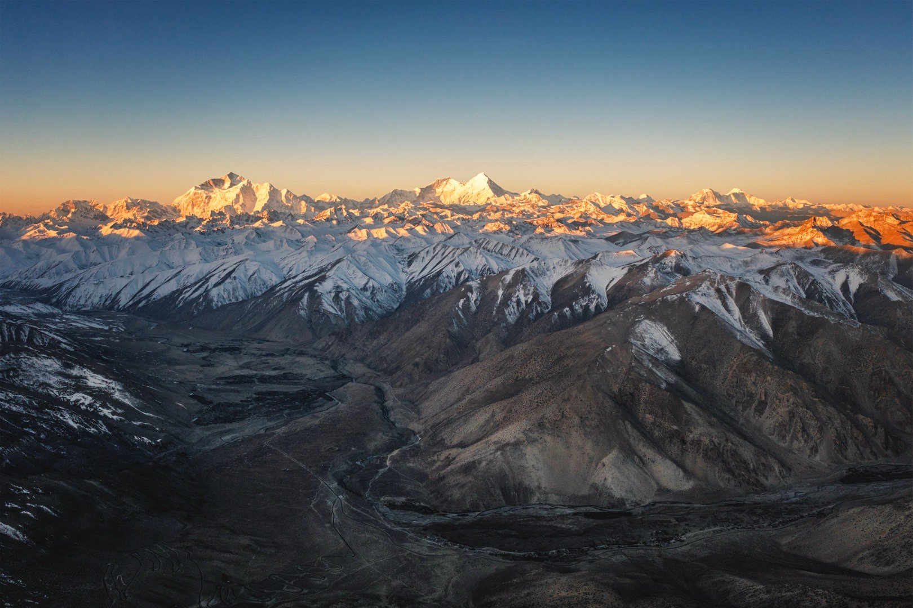
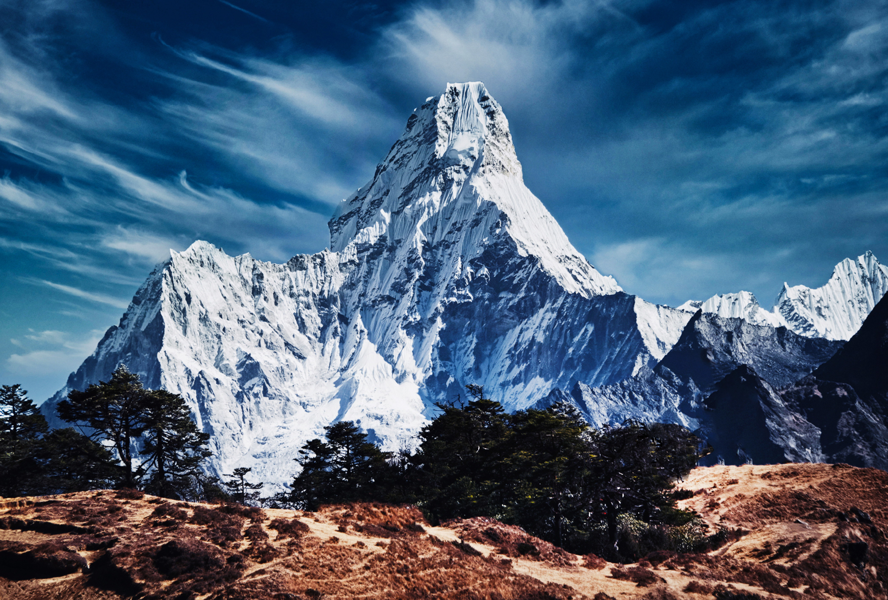

INSTITUTE OF GEOLOGY AND GEOPHYSICS · CAS
Xiaochi
Liu
Geochemistry · Geochronology · Igneous Petrology
Explore profile ↓Mount Everest · Photograph by Dong Shuchang
01 / ABOUT
About me.
I am Xiaochi Liu, a researcher at the Institute of Geology and Geophysics, Chinese Academy of Sciences.
My work spans geochemistry, geochronology and igneous petrology, with a particular interest in the evolution of the Himalayan orogen.
liuxiaochi@mail.iggcas.ac.cn ↗
02 / PUBLICATIONS
Selected
publications.
Google Scholar profile ↗- 20171118
Highly fractionated granites: Recognition and research
F. Y. Wu, X. C. Liu, W. Q. Ji, J. M. Wang, L. Yang · Science China Earth Sciences 60, 1201–1219
- 2020407
Highly fractionated Himalayan leucogranites and associated rare-metal mineralization
F. Y. Wu, X. C. Liu, Z. C. Liu, R. C. Wang, et al. · Lithos 352, 105319
- 2016283
Eocene Neo-Tethyan slab breakoff constrained by 45 Ma oceanic island basalt–type magmatism in southern Tibet
W. Q. Ji, F. Y. Wu, S. L. Chung, X. C. Wang, et al. · Geology 44, 283–286
- 2017227
A preliminary study of rare-metal mineralization in the Himalayan leucogranite belts, South Tibet
R. C. Wang, F. Y. Wu, L. Xie, X. C. Liu, et al. · Science China Earth Sciences 60, 1655–1663
Metrics and citations retrieved from Google Scholar on 5 October 2026.
03 / DATABASE
Research
data.
Selected geoscience data resources from my working collection.
EarthChem
Geochemical data and services for Earth science.
↗ROCK GEOCHEMISTRYGEOROC
Global geochemical database of rocks.
↗TIBETAN PLATEAUTPDC
National Tibetan Plateau Data Center.
↗PETROLOGYOnePetrology
Deep-time petrology data and tools.
↗MINERALOGYRRUFF
Raman, X-ray diffraction and mineral chemistry.
↗MOUNTAINSPeakWiki
A searchable mountain peak database.
↗04 / HIMALAYAN DATABASE
Himalayan
Geochronology &
Geochemistry Database.
An interactive research database for geochronological and geochemical records from the Himalayan orogen.
04 / SOFTWARE
Earth science
software.
Frequently used modelling, mapping and geochemical tools.
05 / MOUNTAINS
Mountains
and landscapes.
Moments from the Himalaya.


